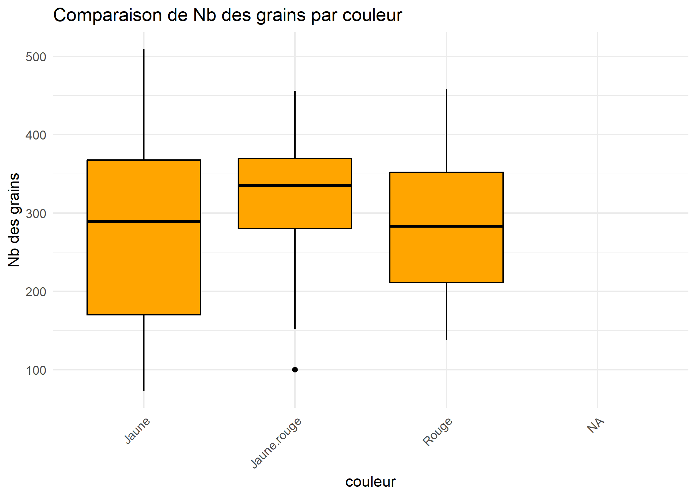
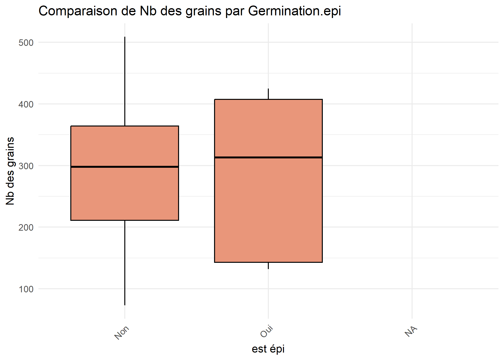
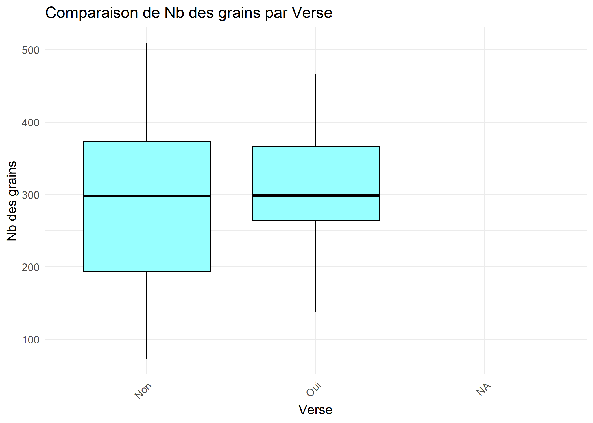
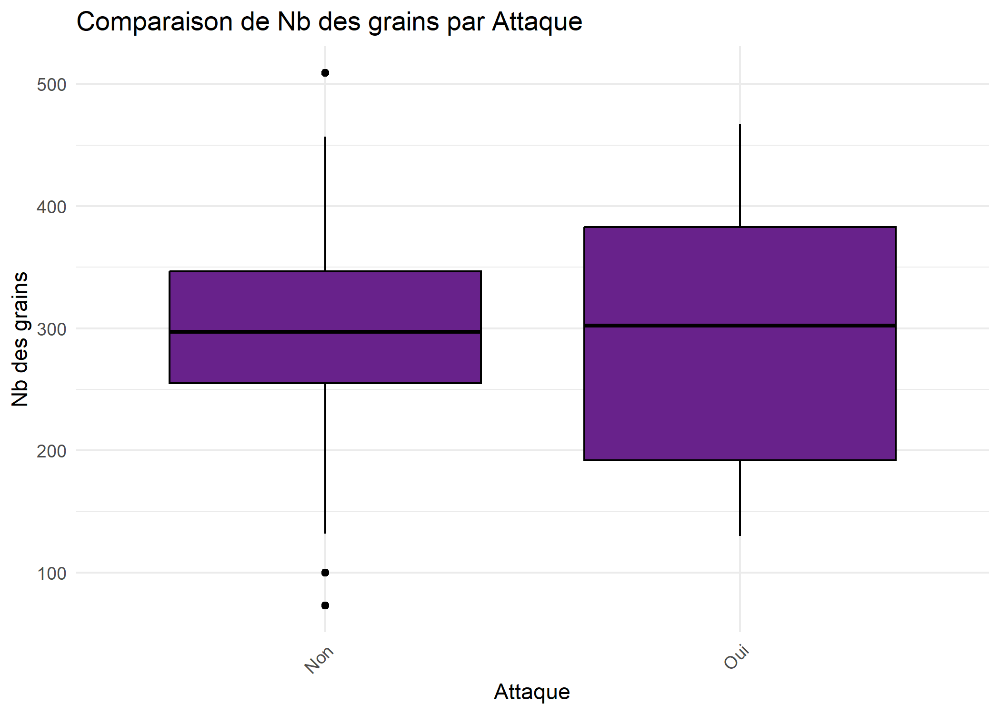

TP ANOVA


Nous disposons de 13 variables dont une (la variable individus) qui fait office d’identifiant unique.Notre base contient 100 individus.Il s’agit de ……… (description des variables,…)
Une premiere inspection de la base nous as conduit a modifier l’individus numero 2 .En effet les valeurs prises par cette individus pour des variables comme Germination.epi ou Enracinement ne sont pas coherente. ##  Premiére inspection
Premiére inspection
Nous avons juge que cela est due a des problemes lors du saisi des donnée. nous vons corrige par :
| Individu | Hauteur | Masse | Nb.grains | Masse.grains | Couleur | Germination.epi | Enracinement | Verse | Attaque | Parcelle | Hauteur.J7 | Verse.Traitement |
|---|---|---|---|---|---|---|---|---|---|---|---|---|
| 2 | 199 | 1431 | 320 | 921 | Rouge | Non | Moyen | Non | Non | Nord | 196 | Oui |
| Variable | valeur_NA | Moyenne | Variance |
|---|---|---|---|
| Individu | 0 | 50.50000 | 841.6667 |
| Hauteur | 3 | 259.36082 | 1965.8580 |
| Masse | 3 | 1811.61856 | 102708.9051 |
| Nb.grains | 3 | 292.63918 | 10283.1914 |
| Masse.grains | 3 | 96.54742 | 8073.7931 |
| Hauteur.J7 | 0 | 257.36000 | 1934.8994 |
Quant aux variables qualitatives
| Variable | Facteurs | Fréquences | Valeurs_manquantes |
|---|---|---|---|
| Couleur | NA, Rouge, Jaune, Jaune.rouge | Jaune ( 48 ), Jaune.rouge ( 22 ), Rouge ( 29 ) | 1 |
| Germination.epi | NA, Non, Oui | Non ( 90 ), Oui ( 9 ) | 1 |
| Enracinement | Faible, Moyen, Tres.fort, Fort | Faible ( 19 ), Fort ( 26 ), Moyen ( 28 ), Tres.fort ( 27 ) | 0 |
| Verse | NA, Non, Oui | Non ( 57 ), Oui ( 42 ) | 1 |
| Attaque | Oui, Non | Non ( 54 ), Oui ( 46 ) | 0 |
| Parcelle | Nord, Sud, Est, Ouest | Est ( 33 ), Nord ( 17 ), Ouest ( 36 ), Sud ( 14 ) | 0 |
| Verse.Traitement | NA, Oui, Non | Non ( 44 ), Oui ( 55 ) | 1 |
Le graphique montre une corrélation positive modérée entre Masse.grains et Nb.grains, indiquant que lorsque l’un augmente, l’autre tend également à augmenter. La force de cette relation est représentée par un cercle bleu clair, suggérant une liaison existante mais non parfaite.
Poursuivons par un autre teste pour voir la corrélation de rangs a defaut d’une correlation lineaire importante
Spearman's rank correlation rho
data: data$Masse.grains and data$Nb.grains
S = 4681.2, p-value < 2.2e-16
alternative hypothesis: true rho is not equal to 0
sample estimates:
rho
0.9692218 Le coefficient de corrélation de Spearman est de 0,969, ce qui indique une très forte corrélation positive entre les deux variables bien que le teste de correlation lineaire indique une non lineaire relation entre nos differents variables. La p-value est inferieure a 0,01 ce qui indique que la correlation est hautement significative .nous rejetons l’hypothèse nulle selon laquelle il n’y a pas de relation entre les deux variables, et il existe donc une forte probabilité que la relation observée soit réelle et non due au hasard.
Compte tenu de la très forte corrélation entre masse des grains et Nombre de grains, nous pouvons conclure qu’une nombre élevée des grains est fortement associée à un nombre élevé de grains. En raison de cette forte association, nous choisissons le nombre de grains comme variable cible pour notre ANOVA.
La variable nombre.grain a trois valeur manquantes ce qui est assez faible,nous traiteront les valeurs manquantes apres choix des variables categorielles.

On observe que
| Individu | Parcelle | Nb.grains | Nb_grains_missing | Nb_grains_aberrant |
|---|---|---|---|---|
| 1 | Nord | NA | TRUE | NA |
| 32 | Est | NA | TRUE | NA |
| 65 | Ouest | NA | TRUE | NA |

On observe que
| Individu | Couleur | Nb.grains | Nb_grains_missing | Nb_grains_aberrant |
|---|---|---|---|---|
| 1 | NA | NA | TRUE | NA |
| 32 | Jaune | NA | TRUE | NA |
| 65 | Jaune | NA | TRUE | NA |

On observe que
| Individu | Germination.epi | Nb.grains | Nb_grains_missing | Nb_grains_aberrant |
|---|---|---|---|---|
| 1 | NA | NA | TRUE | NA |
| 32 | Oui | NA | TRUE | NA |
| 65 | Non | NA | TRUE | NA |

On observe que
| Individu | Enracinement | Nb.grains | Nb_grains_missing | Nb_grains_aberrant |
|---|---|---|---|---|
| 1 | Faible | NA | TRUE | NA |
| 32 | Tres.fort | NA | TRUE | NA |
| 65 | Tres.fort | NA | TRUE | NA |

On observe que
| Individu | Verse | Nb.grains | Nb_grains_missing | Nb_grains_aberrant |
|---|---|---|---|---|
| 1 | NA | NA | TRUE | NA |
| 32 | Non | NA | TRUE | NA |
| 65 | Non | NA | TRUE | NA |

On observe que
| Individu | Attaque | Nb.grains | Nb_grains_missing | Nb_grains_aberrant |
|---|---|---|---|---|
| 1 | Oui | NA | TRUE | NA |
| 32 | Non | NA | TRUE | NA |
| 65 | Non | NA | TRUE | NA |
Ce chapitre est évoqué dans le webin-R #01 (premier contact avec R & RStudio) sur YouTube.
R est un langage orienté vers le traitement de données et l’analyse statistique dérivé du langage S. Il est développé depuis une vingtaine d’années par un groupe de volontaires de différents pays. C’est un logiciel libre1, publié sous licence GNU GPL.
L’utilisation de R présente plusieurs avantages :
Comme rien n’est parfait, on peut également trouver quelques inconvénients :
Il est à noter que le développement autour de R a été particulièrement actif ces dernières années. On trouvera dès lors aujourd’hui de nombreuses extensions permettant de se « faciliter la vie » au quotidien, ce qui n’était pas vraiment encore le cas il y a 5 ans.
Quelques points particuliers dans le fonctionnement de R peuvent parfois dérouter les utilisateurs habitués à d’autres logiciels :
Inhabituel au début, ce fonctionnement permet en fait assez rapidement de gagner du temps dans la conduite des analyses.
L’interface de base de R est assez rudimentaire (voir figure ci-après).
RStudio est un environnement de développement intégré libre, gratuit, et qui fonctionne sous Windows, Mac OS X et Linux. Il complète R et fournit un éditeur de script avec coloration syntaxique, des fonctionnalités pratiques d’édition et d’exécution du code (comme l’autocomplétion), un affichage simultané du code, de la console R, des fichiers, graphiques et pages d’aide, une gestion des extensions, une intégration avec des systèmes de contrôle de versions comme git, etc. Il intègre de base divers outils comme par exemple la production de rapports au format Rmarkdown. Il est en développement actif et de nouvelles fonctionnalités sont ajoutées régulièrement. Son principal défaut est d’avoir une interface uniquement anglophone.
Pour une présentation plus générale de RStudio on pourra se référer au site du projet : http://www.rstudio.com/.
RStudio peut tout à fait être utilisé pour découvrir et démarrer avec R. Les différents chapitres d’analyse-R partent du principe que vous utilisez R avec RStudio. Cependant, à part les éléments portant sur l’interface de RStudio, l’ensemble du code et des fonctions R peuvent être utilisés directement dans R, même en l’absence de RStudio.
La documentation de RStudio (en anglais) est disponible en ligne à https://support.rstudio.com. Pour être tenu informé des dernières évolutions de RStudio, mais également de plusieurs extensions développées dans le cadre de ce projet, vous pouvez suivre le blog dédié http://blog.rstudio.org/.
Pour plus d’informations sur ce qu’est un logiciel libre, voir : http://www.gnu.org/philosophy/free-sw.fr.html.↩︎
On verra qu’il est possible avec RStudio de disposer d’une telle vue.↩︎
Voir par exemple la section dédiée à ce sujet dans le chapitre sur la manipulation de données.↩︎